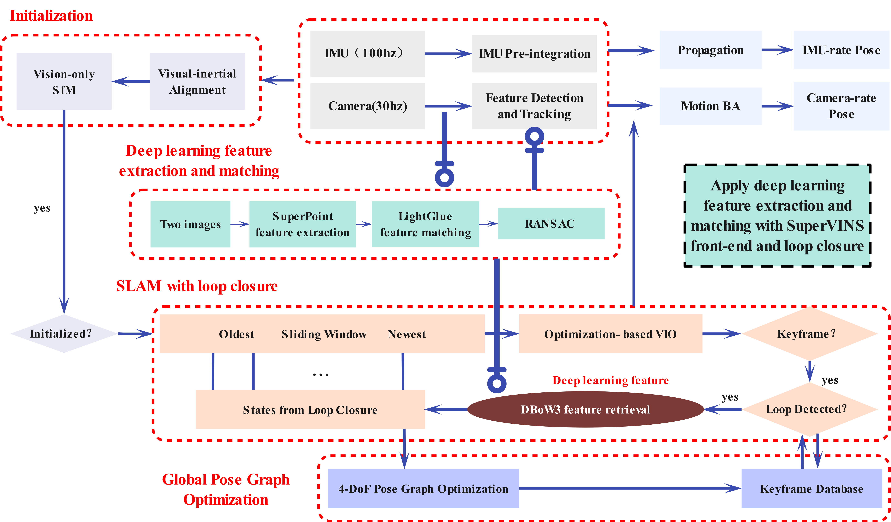

Hongkun Luo (Ternence Luo)
Hongkun Luo:Down-to-earth, light but not shiny, still waters run
deep


 QQ:2638923243
QQ:2638923243


 gmail:luohongkun0715@gmail.com
gmail:luohongkun0715@gmail.com
 email:luohongkun@whu.edu.cn
email:luohongkun@whu.edu.cn
|

|

|
 I am a first-year master's student from
I am a first-year master's student from  Feel free to contact me by email if you are interested in discussing or collaborating with me.
Feel free to contact me by email if you are interested in discussing or collaborating with me.
 News
News
-
[06/2024]
 Won the title of outstanding graduate of China University of Mining and Technology.
Won the title of outstanding graduate of China University of Mining and Technology.
-
[06/2024]
 Graduated from China University of Mining and Technology .
Graduated from China University of Mining and Technology .
-
[09/2023]
Received Chinese National Scholarship.
-
[08/2023]
Participated in the NanJing University International Summer
School with the theme “From the Center of the Earth to the
Deepest Point of the Universe”.
 Education & Visiting
Education & Visiting

|
WuHan University,WuHan,China Master in Geodesy and Surveying Engineering in BRAIN lab Sep. 2024 - Jun. 2027
|

|
NanJing University,NanJing,China Participate as a summer school member. Aug. 2023
|

|
China University of Mining and Technology,XuZhou,China Bachelor of Surveying and Mapping Engineering Sep. 2020 - Jun. 2024
|
 Selected Publications
Selected Publications
|  |
SuperVINS: A visual-inertial SLAM framework integrated deep learning features Hongkun Luo*, Chi Guo†, Yang Liu , Zengke Li Release time:2024.7.31(Preprints) |

|
Modeling and simulation of X-ray pulsar photon arrival times(written in Chinese) Hongkun Luo*, Kaichun Yang , Dan Zheng Release time:2024.10.3(submitted) |
 Industrial Experience
Industrial Experience
 Individual Awards
Individual Awards
2024.6 Outstanding graduates of China University of Mining and Technology.
2022-2023 National Scholarship for Chinese Undergraduate Students.
2023 Surveying and Mapping Skills Competition-National Second Prize in Surveying and Mapping Programming Group.
2023 Mathematical Contest in Modeling/Interdisciplinary Contest in Modeling Meritorious Winner
2021,2022 First Class Academic Scholarship in CUMT
© Hongkun Luo